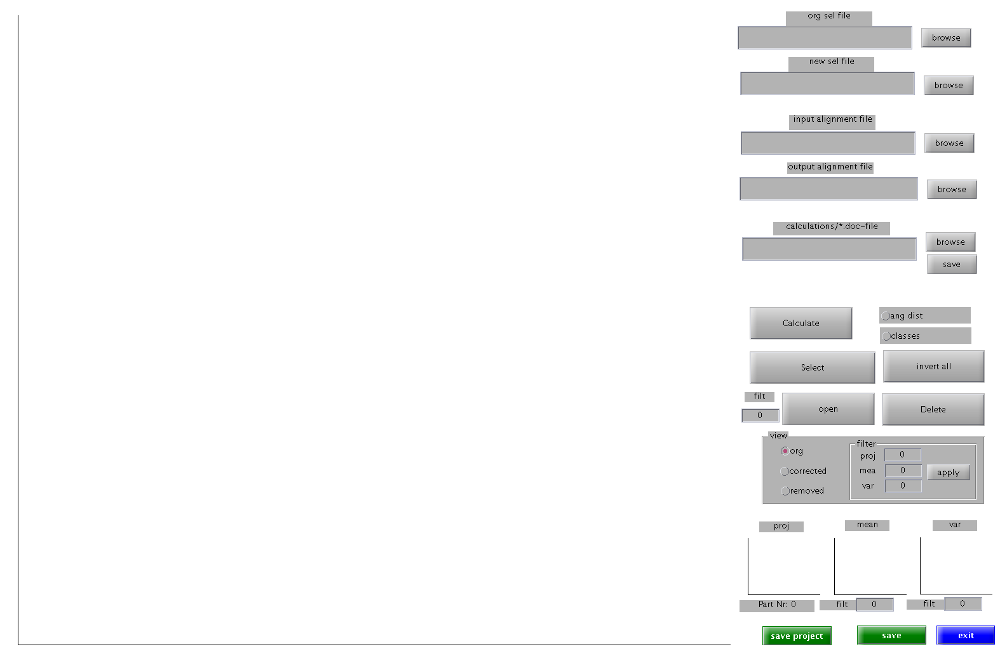

function varargout = tom_av2_xmipp_ang_cl(varargin) % TOM_AV2_XMIPP_ANG_CL M-file for tom_av2_xmipp_ang_cl.fig % TOM_AV2_XMIPP_ANG_CL, by itself, creates a new TOM_AV2_XMIPP_ANG_CL or raises the existing % singleton*. % % H = TOM_AV2_XMIPP_ANG_CL returns the handle to a new TOM_AV2_XMIPP_ANG_CL or the handle to % the existing singleton*. % % TOM_AV2_XMIPP_ANG_CL('CALLBACK',hObject,eventData,handles,...) calls the local % function named CALLBACK in TOM_AV2_XMIPP_ANG_CL.M with the given input arguments. % % TOM_AV2_XMIPP_ANG_CL('Property','Value',...) creates a new TOM_AV2_XMIPP_ANG_CL or raises the % existing singleton*. Starting from the left, property value pairs are % applied to the GUI before tom_av2_xmipp_ang_cl_OpeningFcn gets called. An % unrecognized property name or invalid value makes property application % stop. All inputs are passed to tom_av2_xmipp_ang_cl_OpeningFcn via varargin. % % *See GUI Options on GUIDE's Tools menu. Choose "GUI allows only one % instance to run (singleton)". % % See also: GUIDE, GUIDATA, GUIHANDLES % Edit the above text to modify the response to help tom_av2_xmipp_ang_cl % Last Modified by GUIDE v2.5 12-Aug-2009 10:03:08 % Begin initialization code - DO NOT EDIT gui_Singleton = 1; gui_State = struct('gui_Name', mfilename, ... 'gui_Singleton', gui_Singleton, ... 'gui_OpeningFcn', @tom_av2_xmipp_ang_cl_OpeningFcn, ... 'gui_OutputFcn', @tom_av2_xmipp_ang_cl_OutputFcn, ... 'gui_LayoutFcn', [] , ... 'gui_Callback', []); if nargin && ischar(varargin{1}) gui_State.gui_Callback = str2func(varargin{1}); end if nargout [varargout{1:nargout}] = gui_mainfcn(gui_State, varargin{:}); else gui_mainfcn(gui_State, varargin{:}); end % End initialization code - DO NOT EDIT % --- Executes just before tom_av2_xmipp_ang_cl is made visible. function tom_av2_xmipp_ang_cl_OpeningFcn(hObject, eventdata, handles, varargin) % This function has no output args, see OutputFcn. % hObject handle to figure % eventdata reserved - to be defined in a future version of MATLAB % handles structure with handles and user data (see GUIDATA) % varargin command line arguments to tom_av2_xmipp_ang_cl (see VARARGIN) % Choose default command line output for tom_av2_xmipp_ang_cl handles.output = hObject; global storage_av2_xmipp_ang_cl; storage_av2_xmipp_ang_cl.ax_proj=findobj('Tag','ax_proj'); storage_av2_xmipp_ang_cl.ax_mean=findobj('Tag','ax_mean'); storage_av2_xmipp_ang_cl.ax_var=findobj('Tag','ax_var'); storage_av2_xmipp_ang_cl.part_num=findobj('Tag','part_num'); storage_av2_xmipp_ang_cl.f_mean=handles.filt_mean; storage_av2_xmipp_ang_cl.f_var= handles.filt_var; % Update handles structure guidata(hObject, handles); % UIWAIT makes tom_av2_xmipp_ang_cl wait for user response (see UIRESUME) % uiwait(handles.figure1); % --- Outputs from this function are returned to the command line. function varargout = tom_av2_xmipp_ang_cl_OutputFcn(hObject, eventdata, handles) % varargout cell array for returning output args (see VARARGOUT); % hObject handle to figure % eventdata reserved - to be defined in a future version of MATLAB % handles structure with handles and user data (see GUIDATA) % Get default command line output from handles structure varargout{1} = handles.output; function path_sel_Callback(hObject, eventdata, handles) % hObject handle to path_sel (see GCBO) % eventdata reserved - to be defined in a future version of MATLAB % handles structure with handles and user data (see GUIDATA) % Hints: get(hObject,'String') returns contents of path_sel as text % str2double(get(hObject,'String')) returns contents of path_sel as a double % --- Executes during object creation, after setting all properties. function path_sel_CreateFcn(hObject, eventdata, handles) % hObject handle to path_sel (see GCBO) % eventdata reserved - to be defined in a future version of MATLAB % handles empty - handles not created until after all CreateFcns called % Hint: edit controls usually have a white background on Windows. % See ISPC and COMPUTER. if ispc && isequal(get(hObject,'BackgroundColor'), get(0,'defaultUicontrolBackgroundColor')) set(hObject,'BackgroundColor','white'); end % --- Executes on button press in browse_sel. function browse_sel_Callback(hObject, eventdata, handles) % hObject handle to browse_sel (see GCBO) % eventdata reserved - to be defined in a future version of MATLAB % handles structure with handles and user data (see GUIDATA) [file path]=uigetfile; set(handles.path_sel,'String',[path file]); function path_calc_Callback(hObject, eventdata, handles) % hObject handle to path_calc (see GCBO) % eventdata reserved - to be defined in a future version of MATLAB % handles structure with handles and user data (see GUIDATA) % Hints: get(hObject,'String') returns contents of path_calc as text % str2double(get(hObject,'String')) returns contents of path_calc as a double % --- Executes during object creation, after setting all properties. function path_calc_CreateFcn(hObject, eventdata, handles) % hObject handle to path_calc (see GCBO) % eventdata reserved - to be defined in a future version of MATLAB % handles empty - handles not created until after all CreateFcns called % Hint: edit controls usually have a white background on Windows. % See ISPC and COMPUTER. if ispc && isequal(get(hObject,'BackgroundColor'), get(0,'defaultUicontrolBackgroundColor')) set(hObject,'BackgroundColor','white'); end % --- Executes on button press in browse_calc. function browse_calc_Callback(hObject, eventdata, handles) % hObject handle to browse_calc (see GCBO) % eventdata reserved - to be defined in a future version of MATLAB % handles structure with handles and user data (see GUIDATA) global storage_av2_xmipp_ang_cl [file path]=uigetfile('*.mat;*.doc'); set(handles.path_calc,'String',[path file]); [a b c]=fileparts(file); if (strcmp(c,'.mat')) load([[path file]]); storage_av2_xmipp_ang_cl.img=big_stack; storage_av2_xmipp_ang_cl.indx=indx; axes(handles.mainaxes); [gg lookup]=tom_gallery(big_stack); imhandle=imagesc(gg'); axis image; colormap gray; set(handles.mainaxes,'XTick',[]); set(handles.mainaxes,'YTick',[]); set(imhandle, 'Tag', 'main_image2'); storage_av2_xmipp_ang_cl.lookup=lookup; end; guidata(hObject, handles); % --- Executes on button press in save_calc. function save_calc_Callback(hObject, eventdata, handles) % hObject handle to save_calc (see GCBO) % eventdata reserved - to be defined in a future version of MATLAB % handles structure with handles and user data (see GUIDATA) % --- Executes on button press in select. function select_Callback(hObject, eventdata, handles) % hObject handle to select (see GCBO) % eventdata reserved - to be defined in a future version of MATLAB % handles structure with handles and user data (see GUIDATA) %if get(hObject,'Value') == 1 set(handles.output,'Pointer','crosshair'); set(findobj('Tag','main_image2'),'buttonDownFcn',@pick_particle); % else % set(handles.output,'Pointer','arrow'); % set(findobj('Tag','main_image'),'buttonDownFcn',@dummy); % end guidata(hObject, handles); % --- Executes on button press in open. function open_Callback(hObject, eventdata, handles) % hObject handle to open (see GCBO) % eventdata reserved - to be defined in a future version of MATLAB % handles structure with handles and user data (see GUIDATA) global storage_av2_xmipp_ang_cl; sel_back=tom_av2_xmipp_ang_sor_cl({storage_av2_xmipp_ang_cl.tmp_idx},{storage_av2_xmipp_ang_cl.pro_m_var}); storage_av2_xmipp_ang_cl.indx(storage_av2_xmipp_ang_cl.ind_sel).sel=sel_back; storage_av2_xmipp_ang_cl.tmp_idx=storage_av2_xmipp_ang_cl.indx(storage_av2_xmipp_ang_cl.ind_sel); % --- Executes on button press in del. function del_Callback(hObject, eventdata, handles) % hObject handle to del (see GCBO) % eventdata reserved - to be defined in a future version of MATLAB % handles structure with handles and user data (see GUIDATA) % --- Executes on button press in calc. function calc_Callback(hObject, eventdata, handles) % hObject handle to calc (see GCBO) % eventdata reserved - to be defined in a future version of MATLAB % handles str global storage_av2_xmipp_ang_cl; str=get(handles.path_calc,'String'); str_alg=get(handles.al_in,'String'); [vol_var,var_stack,vol,stack,big_st,ind]=tom_xmippvariancemap3d(str,'Index.mat',str_alg); storage_av2_xmipp_ang_cl.img=big_st; storage_av2_xmipp_ang_cl.indx=ind; axes(handles.mainaxes); [gg lookup]=tom_gallery(big_st); imhandle=imagesc(gg'); axis image; colormap gray; set(handles.mainaxes,'XTick',[]); set(handles.mainaxes,'YTick',[]); set(imhandle, 'Tag', 'main_image2'); storage_av2_xmipp_ang_cl.lookup=lookup; guidata(hObject, handles); % --- Executes on button press in rad_ang_dist. function rad_ang_dist_Callback(hObject, eventdata, handles) % hObject handle to rad_ang_dist (see GCBO) % eventdata reserved - to be defined in a future version of MATLAB % handles structure with handles and user data (see GUIDATA) % Hint: get(hObject,'Value') returns toggle state of rad_ang_dist % --- Executes on button press in rad_classes. function rad_classes_Callback(hObject, eventdata, handles) % hObject handle to rad_classes (see GCBO) % eventdata reserved - to be defined in a future version of MATLAB % handles structure with handles and user data (see GUIDATA) % Hint: get(hObject,'Value') returns toggle state of rad_classes function pick_particle(a,b) global storage_av2_xmipp_ang_cl; point1=get(gca,'currentpoint'); button = get(gcf,'selectiontype'); try im=tom_spiderread(storage_av2_xmipp_ang_cl.indx(1).filename{1}); catch im=tom_spiderread(storage_av2_xmipp_ang_cl.indx(10).filename{1}); end; sz_im=size(im.Value); %button values: %normal: left mouse button %alt: right mouse button %extend: middle mouse buttons if (strcmp(button,'normal') == true) storage_av2_xmipp_ang_cl.tmp_idx=''; [pointidx, pointcoords, distance] = tom_nearestpoint(point1(1,1:2),storage_av2_xmipp_ang_cl.lookup); %hold on; plot(pointcoords(1),pointcoords(2),'ro'); hold off; ind=floor((pointidx./3)-0.01)+1; rest=rem(pointidx,3); switch rest case 0 rect_cent=[(pointcoords(1) - sz_im(1)) pointcoords(2)]; case 1 rect_cent=[(pointcoords(1) + sz_im(1)) pointcoords(2)]; case 2 rect_cent=pointcoords; end; rect_cent=rect_cent-(sz_im./2.5); hold on; plot(rect_cent(1),rect_cent(2),'rs','MarkerSize',round(sz_im(1)./19),'MarkerFaceColor','r'); plot(rect_cent(1)- sz_im(1),rect_cent(2),'rs','MarkerSize',round(sz_im(1)./19),'MarkerFaceColor','r'); plot(rect_cent(1)+ sz_im(1),rect_cent(2),'rs','MarkerSize',round(sz_im(1)./19),'MarkerFaceColor','r'); hold off; if (ind==0) ind=1; end; storage_av2_xmipp_ang_cl.tmp_idx=storage_av2_xmipp_ang_cl.indx(ind); %tom_imagesc(storage_av2_xmipp_ang_cl.img(:,:,ind.*3-2)); %h=findobj('Tag','ax_proj'); h=storage_av2_xmipp_ang_cl.ax_proj; axes(h); imagesc(storage_av2_xmipp_ang_cl.img(:,:,ind.*3-2)'); axis image; colormap gray; set(h,'XTick',[]); set(h,'YTick',[]); %h=findobj('Tag','ax_mean'); h=storage_av2_xmipp_ang_cl.ax_mean; axes(h); f_tmp=str2double(get(storage_av2_xmipp_ang_cl.f_mean,'String')); imagesc(tom_filter(storage_av2_xmipp_ang_cl.img(:,:,ind.*3-1)',f_tmp)); axis image; colormap gray; set(h,'XTick',[]); set(h,'YTick',[]); %h=findobj('Tag','ax_var'); h=storage_av2_xmipp_ang_cl.ax_var; axes(h); f_tmp=str2double(get(storage_av2_xmipp_ang_cl.f_var,'String')); imagesc(tom_filter(storage_av2_xmipp_ang_cl.img(:,:,ind.*3-0)',f_tmp)); axis image; colormap gray; set(h,'XTick',[]); set(h,'YTick',[]); h=storage_av2_xmipp_ang_cl.part_num; set(h,'String',['Part Nr: ' num2str(length(storage_av2_xmipp_ang_cl.tmp_idx.filename)) ]); storage_av2_xmipp_ang_cl.pro_m_var=storage_av2_xmipp_ang_cl.img(:,:,ind*3-2:ind*3); storage_av2_xmipp_ang_cl.ind_sel=ind; end; if ( strcmp(button,'extend') == true) %position = round(get(hObject,'Value')); end; function path_new_sel_Callback(hObject, eventdata, handles) % hObject handle to path_new_sel (see GCBO) % eventdata reserved - to be defined in a future version of MATLAB % handles structure with handles and user data (see GUIDATA) % Hints: get(hObject,'String') returns contents of path_new_sel as text % str2double(get(hObject,'String')) returns contents of path_new_sel as a double % --- Executes during object creation, after setting all properties. function path_new_sel_CreateFcn(hObject, eventdata, handles) % hObject handle to path_new_sel (see GCBO) % eventdata reserved - to be defined in a future version of MATLAB % handles empty - handles not created until after all CreateFcns called % Hint: edit controls usually have a white background on Windows. % See ISPC and COMPUTER. if ispc && isequal(get(hObject,'BackgroundColor'), get(0,'defaultUicontrolBackgroundColor')) set(hObject,'BackgroundColor','white'); end % --- Executes on button press in browse_new_sel. function browse_new_sel_Callback(hObject, eventdata, handles) % hObject handle to browse_new_sel (see GCBO) % eventdata reserved - to be defined in a future version of MATLAB % handles structure with handles and user data (see GUIDATA) [file path]=uiputfile; set(handles.path_new_sel,'String',[path file]); % --- Executes on button press in checkbox1. function checkbox1_Callback(hObject, eventdata, handles) % hObject handle to checkbox1 (see GCBO) % eventdata reserved - to be defined in a future version of MATLAB % handles structure with handles and user data (see GUIDATA) % Hint: get(hObject,'Value') returns toggle state of checkbox1 % --- Executes on button press in exit. function exit_Callback(hObject, eventdata, handles) % hObject handle to exit (see GCBO) % eventdata reserved - to be defined in a future version of MATLAB % handles structure with handles and user data (see GUIDATA) function al_in_Callback(hObject, eventdata, handles) % hObject handle to al_in (see GCBO) % eventdata reserved - to be defined in a future version of MATLAB % handles structure with handles and user data (see GUIDATA) % Hints: get(hObject,'String') returns contents of al_in as text % str2double(get(hObject,'String')) returns contents of al_in as a double % --- Executes during object creation, after setting all properties. function al_in_CreateFcn(hObject, eventdata, handles) % hObject handle to al_in (see GCBO) % eventdata reserved - to be defined in a future version of MATLAB % handles empty - handles not created until after all CreateFcns called % Hint: edit controls usually have a white background on Windows. % See ISPC and COMPUTER. if ispc && isequal(get(hObject,'BackgroundColor'), get(0,'defaultUicontrolBackgroundColor')) set(hObject,'BackgroundColor','white'); end % --- Executes on button press in br_al_in. function br_al_in_Callback(hObject, eventdata, handles) % hObject handle to br_al_in (see GCBO) % eventdata reserved - to be defined in a future version of MATLAB % handles structure with handles and user data (see GUIDATA) [file path]=uigetfile; set(handles.al_in,'String',[path file]); function al_out_Callback(hObject, eventdata, handles) % hObject handle to al_out (see GCBO) % eventdata reserved - to be defined in a future version of MATLAB % handles structure with handles and user data (see GUIDATA) % Hints: get(hObject,'String') returns contents of al_out as text % str2double(get(hObject,'String')) returns contents of al_out as a double % --- Executes during object creation, after setting all properties. function al_out_CreateFcn(hObject, eventdata, handles) % hObject handle to al_out (see GCBO) % eventdata reserved - to be defined in a future version of MATLAB % handles empty - handles not created until after all CreateFcns called % Hint: edit controls usually have a white background on Windows. % See ISPC and COMPUTER. if ispc && isequal(get(hObject,'BackgroundColor'), get(0,'defaultUicontrolBackgroundColor')) set(hObject,'BackgroundColor','white'); end % --- Executes on button press in br_al_out. function br_al_out_Callback(hObject, eventdata, handles) % hObject handle to br_al_out (see GCBO) % eventdata reserved - to be defined in a future version of MATLAB % handles structure with handles and user data (see GUIDATA) [file path]=uiputfile; set(handles.al_out,'String',[path file]); % --- Executes on button press in save. function save_Callback(hObject, eventdata, handles) % hObject handle to save (see GCBO) % eventdata reserved - to be defined in a future version of MATLAB % handles structure with handles and user data (see GUIDATA) global storage_av2_xmipp_ang_cl; str=get(handles.al_out,'String'); if (isempty(str)==0) zz=1; for i=1:length(storage_av2_xmipp_ang_cl.indx) for ii=1:length(storage_av2_xmipp_ang_cl.indx(i).filename) if (isempty(storage_av2_xmipp_ang_cl.indx(i).filename{1})==0) && (storage_av2_xmipp_ang_cl.indx(i).sel(ii)==1) align2d(1,zz)=storage_av2_xmipp_ang_cl.indx(i).align{ii}; zz=zz+1; end; end; end; save(str,'align2d'); end; str=get(handles.path_new_sel,'String'); if (isempty(str)==0) fp=fopen(str,'w'); zz=1; for i=1:length(storage_av2_xmipp_ang_cl.indx) for ii=1:length(storage_av2_xmipp_ang_cl.indx(i).filename) if (isempty(storage_av2_xmipp_ang_cl.indx(i).filename{1})==0) && (storage_av2_xmipp_ang_cl.indx(i).sel(ii)==1) fprintf(fp,[storage_av2_xmipp_ang_cl.indx(i).filename{ii} ' 1 \n']); zz=zz+1; end; end; end; fclose(fp); end; % --- Executes on button press in invert_all. function invert_all_Callback(hObject, eventdata, handles) % hObject handle to invert_all (see GCBO) % eventdata reserved - to be defined in a future version of MATLAB % handles structure with handles and user data (see GUIDATA) global storage_av2_xmipp_ang_cl; for i=1:length(storage_av2_xmipp_ang_cl.indx) storage_av2_xmipp_ang_cl.indx(i).sel=storage_av2_xmipp_ang_cl.indx(i).sel==0; end; function filt_mean_Callback(hObject, eventdata, handles) % hObject handle to filt_mean (see GCBO) % eventdata reserved - to be defined in a future version of MATLAB % handles structure with handles and user data (see GUIDATA) % Hints: get(hObject,'String') returns contents of filt_mean as text % str2double(get(hObject,'String')) returns contents of filt_mean as a double % --- Executes during object creation, after setting all properties. function filt_mean_CreateFcn(hObject, eventdata, handles) % hObject handle to filt_mean (see GCBO) % eventdata reserved - to be defined in a future version of MATLAB % handles empty - handles not created until after all CreateFcns called % Hint: edit controls usually have a white background on Windows. % See ISPC and COMPUTER. if ispc && isequal(get(hObject,'BackgroundColor'), get(0,'defaultUicontrolBackgroundColor')) set(hObject,'BackgroundColor','white'); end function filt_var_Callback(hObject, eventdata, handles) % hObject handle to filt_var (see GCBO) % eventdata reserved - to be defined in a future version of MATLAB % handles structure with handles and user data (see GUIDATA) % Hints: get(hObject,'String') returns contents of filt_var as text % str2double(get(hObject,'String')) returns contents of filt_var as a double % --- Executes during object creation, after setting all properties. function filt_var_CreateFcn(hObject, eventdata, handles) % hObject handle to filt_var (see GCBO) % eventdata reserved - to be defined in a future version of MATLAB % handles empty - handles not created until after all CreateFcns called % Hint: edit controls usually have a white background on Windows. % See ISPC and COMPUTER. if ispc && isequal(get(hObject,'BackgroundColor'), get(0,'defaultUicontrolBackgroundColor')) set(hObject,'BackgroundColor','white'); end function edit8_Callback(hObject, eventdata, handles) % hObject handle to edit8 (see GCBO) % eventdata reserved - to be defined in a future version of MATLAB % handles structure with handles and user data (see GUIDATA) % Hints: get(hObject,'String') returns contents of edit8 as text % str2double(get(hObject,'String')) returns contents of edit8 as a double % --- Executes during object creation, after setting all properties. function edit8_CreateFcn(hObject, eventdata, handles) % hObject handle to edit8 (see GCBO) % eventdata reserved - to be defined in a future version of MATLAB % handles empty - handles not created until after all CreateFcns called % Hint: edit controls usually have a white background on Windows. % See ISPC and COMPUTER. if ispc && isequal(get(hObject,'BackgroundColor'), get(0,'defaultUicontrolBackgroundColor')) set(hObject,'BackgroundColor','white'); end function f_all_proj_Callback(hObject, eventdata, handles) % hObject handle to text222 (see GCBO) % eventdata reserved - to be defined in a future version of MATLAB % handles structure with handles and user data (see GUIDATA) % Hints: get(hObject,'String') returns contents of text222 as text % str2double(get(hObject,'String')) returns contents of text222 as a double % --- Executes during object creation, after setting all properties. function text222_CreateFcn(hObject, eventdata, handles) % hObject handle to text222 (see GCBO) % eventdata reserved - to be defined in a future version of MATLAB % handles empty - handles not created until after all CreateFcns called % Hint: edit controls usually have a white background on Windows. % See ISPC and COMPUTER. if ispc && isequal(get(hObject,'BackgroundColor'), get(0,'defaultUicontrolBackgroundColor')) set(hObject,'BackgroundColor','white'); end function f_all_mea_Callback(hObject, eventdata, handles) % hObject handle to f_all_mea (see GCBO) % eventdata reserved - to be defined in a future version of MATLAB % handles structure with handles and user data (see GUIDATA) % Hints: get(hObject,'String') returns contents of f_all_mea as text % str2double(get(hObject,'String')) returns contents of f_all_mea as a double % --- Executes during object creation, after setting all properties. function f_all_mea_CreateFcn(hObject, eventdata, handles) % hObject handle to f_all_mea (see GCBO) % eventdata reserved - to be defined in a future version of MATLAB % handles empty - handles not created until after all CreateFcns called % Hint: edit controls usually have a white background on Windows. % See ISPC and COMPUTER. if ispc && isequal(get(hObject,'BackgroundColor'), get(0,'defaultUicontrolBackgroundColor')) set(hObject,'BackgroundColor','white'); end function f_all_var_Callback(hObject, eventdata, handles) % hObject handle to dsafafdf (see GCBO) % eventdata reserved - to be defined in a future version of MATLAB % handles structure with handles and user data (see GUIDATA) % Hints: get(hObject,'String') returns contents of dsafafdf as text % str2double(get(hObject,'String')) returns contents of dsafafdf as a double % --- Executes during object creation, after setting all properties. function dsafafdf_CreateFcn(hObject, eventdata, handles) % hObject handle to dsafafdf (see GCBO) % eventdata reserved - to be defined in a future version of MATLAB % handles empty - handles not created until after all CreateFcns called % Hint: edit controls usually have a white background on Windows. % See ISPC and COMPUTER. if ispc && isequal(get(hObject,'BackgroundColor'), get(0,'defaultUicontrolBackgroundColor')) set(hObject,'BackgroundColor','white'); end % --- Executes on button press in apply_filt. function apply_filt_Callback(hObject, eventdata, handles) % hObject handle to apply_filt (see GCBO) % eventdata reserved - to be defined in a future version of MATLAB % handles structure with handles and user data (see GUIDATA) global storage_av2_xmipp_ang_cl f_proj=str2double(get(handles.text222,'String')); f_mea=str2double(get(handles.f_all_mea,'String')); f_var=str2double(get(handles.dsafafdf,'String')); for i=1:size(storage_av2_xmipp_ang_cl.img,3) if (f_proj>0) end; if(f_mea>0) end; if(f_var>0) end; end; disp(' '); % --- Executes on button press in save_proj. function save_proj_Callback(hObject, eventdata, handles) % hObject handle to save_proj (see GCBO) % eventdata reserved - to be defined in a future version of MATLAB % handles structure with handles and user data (see GUIDATA) function filt_open_Callback(hObject, eventdata, handles) % hObject handle to filt_open (see GCBO) % eventdata reserved - to be defined in a future version of MATLAB % handles structure with handles and user data (see GUIDATA) % Hints: get(hObject,'String') returns contents of filt_open as text % str2double(get(hObject,'String')) returns contents of filt_open as a double % --- Executes during object creation, after setting all properties. function filt_open_CreateFcn(hObject, eventdata, handles) % hObject handle to filt_open (see GCBO) % eventdata reserved - to be defined in a future version of MATLAB % handles empty - handles not created until after all CreateFcns called % Hint: edit controls usually have a white background on Windows. % See ISPC and COMPUTER. if ispc && isequal(get(hObject,'BackgroundColor'), get(0,'defaultUicontrolBackgroundColor')) set(hObject,'BackgroundColor','white'); end
??? Error using ==> feval
Undefined function or method 'f_all_var_CreateFcn' for input arguments of type 'double'.
Error in ==> gui_mainfcn at 96
feval(varargin{:});
Error in ==> tom_av2_xmipp_ang_cl at 42
gui_mainfcn(gui_State, varargin{:});
Error in ==> @(hObject,eventdata)tom_av2_xmipp_ang_cl('f_all_var_CreateFcn',hObject,eventdata,guidata(hObject))
??? Error using ==> struct2handle
Error while evaluating uicontrol CreateFcn
??? Error using ==> feval
Undefined function or method 'f_all_proj_CreateFcn' for input arguments of type 'double'.
Error in ==> gui_mainfcn at 96
feval(varargin{:});
Error in ==> tom_av2_xmipp_ang_cl at 42
gui_mainfcn(gui_State, varargin{:});
Error in ==> @(hObject,eventdata)tom_av2_xmipp_ang_cl('f_all_proj_CreateFcn',hObject,eventdata,guidata(hObject))
??? Error using ==> struct2handle
Error while evaluating uicontrol CreateFcn
